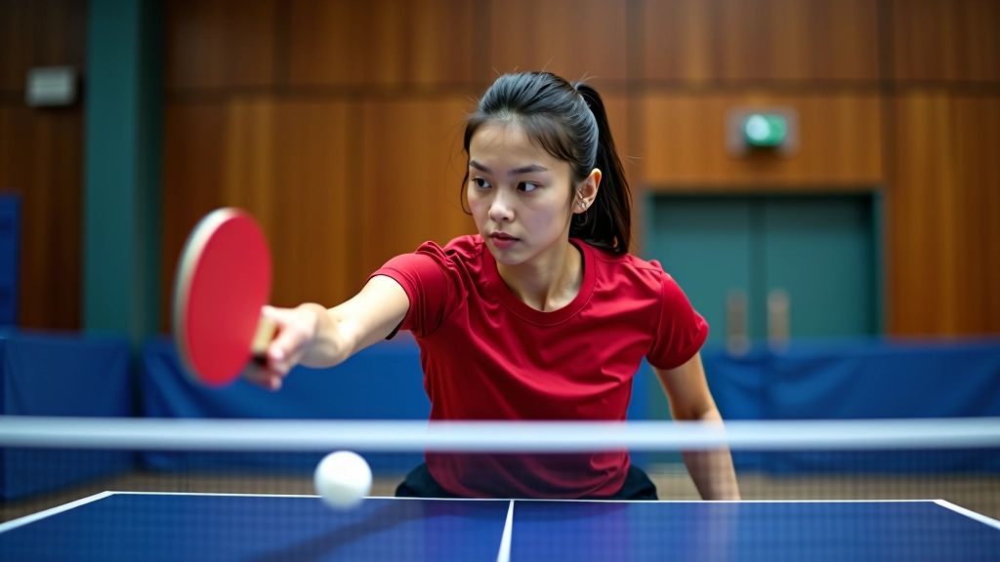
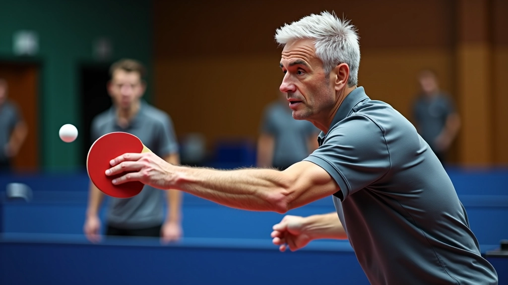
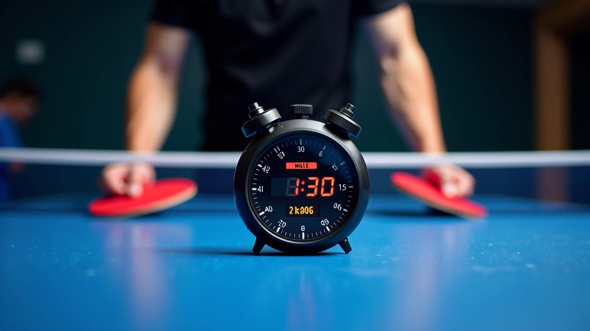

الحركات الأساسية لاستقبال الإرسالات
تعرف على الموقف الصحيح والحركات التي تحتاجها لبدء اللعب. هذه الأساسيات توفر أساس قوي لكل تطورات أخرى.
السرعة تأتي من التدريب المتكرر والمنظم. إليك تمارين محددة تحسّن وقت رد الفعل لديك في تنس الطاولة.

في تنس الطاولة، الفارق بين اللاعب الجيد والرائع يقاس بأجزاء من الثانية. لا تعني سرعة الرد السرعة فقط — بل الاستجابة الذكية والموضعية الصحيحة منذ اللحظة الأولى.
وقت رد الفعل يتحسّن مع الممارسة المنتظمة. نحن لا نتحدث عن موهبة طبيعية، بل عن تدريب منظم يركز على العصبية والعضلات معاً.

هذا التمرين بسيط لكنه فعّال جداً. تقف بجانب طاولة التدريب، والمدرب أو الزميل يرفع يده بسرعة — إما يميناً أو يساراً. عليك أن تلمس المكان المشار إليه في أقل من ثانية واحدة.
بعد أسبوع من هذا التمرين، ستلاحظ أن استجابتك للإرسالات أسرع بشكل ملحوظ.

المدرب يضرب كرات متتالية بسرعة متزايدة. البداية بطيئة نسبياً — حوالي 8 كرات في الثانية — ثم تزيد السرعة تدريجياً. تركيزك على استقبال كل كرة بدقة.
هذا التمرين يطور ما نسميه "الانتباه المركز". أنت لا تستقبل الكرة فقط، بل تتوقع الكرة التالية قبل أن تصل إليك.
الأسبوع الأول: 8-10 كرات/الثانية، 5 مجموعات من 30 ثانية
الأسبوع الثاني: 10-12 كرة/الثانية، 6 مجموعات من 45 ثانية
الأسبوع الثالث: 12-15 كرة/الثانية، 5 مجموعات من 60 ثانية
هذا التمرين متقدم قليلاً. المدرب يرسل كرات بدورانات مختلفة — أفقي، عمودي، جانبي — وأنت تحاول تخمين نوع الدوران من حركة يده قبل أن تصل الكرة.
الفكرة؟ اللاعبون السريعون لا ينتظرون الكرة لتصل إليهم. هم يقرأون الحركة منذ البداية ويستعدون بالفعل.


التحسن يحدث ببطء لكن بثبات. في الأسابيع الأولى، قد تنخفض سرعة رد فعلك من 350 ميلي ثانية إلى 300. بعد شهر من التدريب المنتظم، يمكنك الوصول إلى 250 ميلي ثانية.
لا تقلق إن كنت ببطء في البداية. معظم اللاعبين الجدد يبدأون بسرعة رد فعل تتراوح بين 400-500 ميلي ثانية. حتى اللاعبون المحترفون لا يقللونها عن 150-180 ميلي ثانية.
استخدم تطبيقات قياس سرعة رد الفعل المتاحة على الهاتف
سجل نتائجك كل أسبوع
قارن مع قياسات الأسبوع الماضي، لا مع قياسات اللاعبين الآخرين
هذه التمارين موضحة بهدف تعليمي. النتائج تختلف من شخص لآخر بناءً على مستوى اللياقة البدنية والتدريب السابق. إذا شعرت بألم أثناء التدريب، توقف فوراً واستشر مدرباً محترفاً. التدريب الآمن هو الأهم.
سرعة الرد ليست سحراً. إنها نتيجة تدريب منظم وصبر على النتائج. جسمك يتعلم عبر التكرار، والدماغ يتعلم عبر الانتباه والملاحظة.
ابدأ بتمرين واحد فقط. تدرب عليه ثلاث مرات في الأسبوع لمدة أسبوعين. ثم أضف التمرين الثاني. التدريج هو المفتاح — الحمل الزائد يؤدي إلى الإصابات، والتدريب الخفيف لا يحقق نتائج.
الجزء الممل هو أن هذا يستغرق وقتاً. لكن إذا كنت جاداً بشأن تحسين لعبتك، فلا توجد طريقة أخرى. التمارين تعمل. عليك فقط أن تعمل بانتظام.
تعرف على الموقف الصحيح والحركات التي تحتاجها لبدء اللعب. هذه الأساسيات توفر أساس قوي لكل تطورات أخرى.

الإرسالات الجانبية صعبة لكنها يمكن السيطرة عليها. نشرح كيفية قراءة الدوران والرد بثقة.

معظم اللاعبين يقعون في نفس الفخاخ. نناقش الأخطاء التي تراها بشكل متكرر وكيفية إصلاحها.